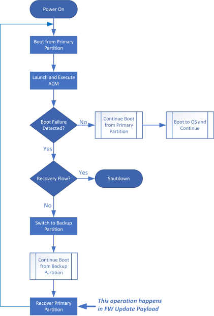
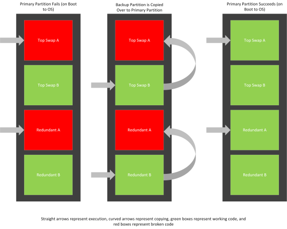
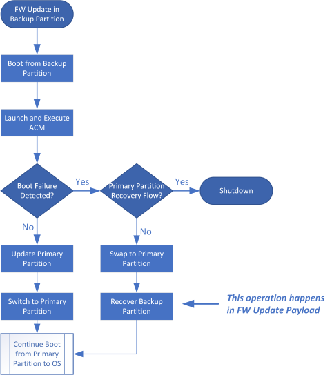
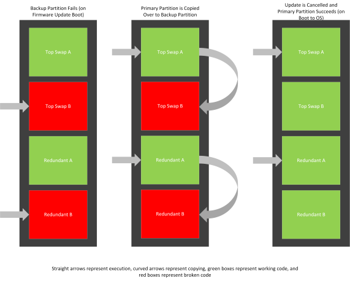

Firmware Resiliency and Recovery
SBL implements a resiliency and recovery mechanism for boot-critical firmware.
If, at any point in the boot flow, a critical failure is detected, SBL will try to recover from such a failure.
Examples of critical failures include:
Crash
Dead Loop
Corruption
Note
This feature is only available on select platforms. If a platform supports resiliency and recovery, its associated board and stitch configurations will provide options to turn it on. See Enabling Firmware Resiliency and Recovery for more details.
Firmware resiliency and recovery is accomplished by duplicating boot-critical firmware across a primary and backup partition. This backup partition has a role in Firmware Update as well. Top Swap B is an exact duplicate of Top Swap A and Redundant B is an exact duplicate of Redundant A. This duplication is illustrated in the sample flash map below:
Flash Map Information:
+------------------------------------------------------------------------+
| FLASH MAP |
| (RomSize = 0x00E00000) |
+------------------------------------------------------------------------+
| NAME | OFFSET (BASE) | SIZE | FLAGS |
+----------+------------------------+------------+-----------------------+
+------------------------------------------------------------------------+
| TOP SWAP A |
+------------------------------------------------------------------------+
| SG1A | 0xde5000(0xFFFE5000) | 0x01b000 | Uncompressed, TS_A |
| ACM0 | 0xd80000(0xFFF80000) | 0x065000 | Uncompressed, TS_A |
| UCOD | 0xcc1000(0xFFEC1000) | 0x0bf000 | Uncompressed, TS_A |
| SG1B | 0xac1000(0xFFCC1000) | 0x200000 | Uncompressed, TS_A |
| EMTY | 0xa00000(0xFFC00000) | 0x0c1000 | Uncompressed, TS_A |
+------------------------------------------------------------------------+
| TOP SWAP B |
+------------------------------------------------------------------------+
| SG1A | 0x9e5000(0xFFBE5000) | 0x01b000 | Uncompressed, TS_B |
| ACM0 | 0x980000(0xFFB80000) | 0x065000 | Uncompressed, TS_B |
| UCOD | 0x8c1000(0xFFAC1000) | 0x0bf000 | Uncompressed, TS_B |
| SG1B | 0x6c1000(0xFF8C1000) | 0x200000 | Uncompressed, TS_B |
| EMTY | 0x600000(0xFF800000) | 0x0c1000 | Uncompressed, TS_B |
+------------------------------------------------------------------------+
| REDUNDANT A |
+------------------------------------------------------------------------+
| KEYH | 0x5ff000(0xFF7FF000) | 0x001000 | Uncompressed, R_A |
| CNFG | 0x5fb000(0xFF7FB000) | 0x004000 | Uncompressed, R_A |
| FWUP | 0x5db000(0xFF7DB000) | 0x020000 | Compressed , R_A |
| SG02 | 0x519000(0xFF719000) | 0x0c2000 | Compressed , R_A |
+------------------------------------------------------------------------+
| REDUNDANT B |
+------------------------------------------------------------------------+
| KEYH | 0x518000(0xFF718000) | 0x001000 | Uncompressed, R_B |
| CNFG | 0x514000(0xFF714000) | 0x004000 | Uncompressed, R_B |
| FWUP | 0x4f4000(0xFF6F4000) | 0x020000 | Compressed , R_B |
| SG02 | 0x432000(0xFF632000) | 0x0c2000 | Compressed , R_B |
+------------------------------------------------------------------------+
| NON REDUNDANT |
+------------------------------------------------------------------------+
| PYLD | 0x402000(0xFF602000) | 0x030000 | Compressed , NR |
| UVAR | 0x401000(0xFF601000) | 0x001000 | Uncompressed, NR |
| EPLD | 0x2a0000(0xFF4A0000) | 0x161000 | Uncompressed, NR |
| MRCD | 0x290000(0xFF490000) | 0x010000 | Uncompressed, NR |
| VARS | 0x28e000(0xFF48E000) | 0x002000 | Uncompressed, NR |
| IPFW | 0x28d000(0xFF48D000) | 0x001000 | Uncompressed, NR |
| EMTY | 0x072000(0xFF272000) | 0x21b000 | Uncompressed, NR |
+------------------------------------------------------------------------+
| NON VOLATILE |
+------------------------------------------------------------------------+
| RSVD | 0x071000(0xFF271000) | 0x001000 | Uncompressed, NV |
| EMTY | 0x000000(0xFF200000) | 0x071000 | Uncompressed, NV |
+----------+------------------------+------------+-----------------------+
The SBL components covered by firmware resiliency and recovery are all the regions in the Top Swap and Redundant regions.
Whenever a failure is detected on one partition, a boot is tried from the other partition. If successful, the failing partition is overwritten with the working partition. Then, a normal boot to OS is executed, cancelling out a firmware update if one is in flight. Thus, this can occur during a normal boot, or a update-related boot. So, the primary partition can be copied over to the backup partition and vice versa.
The diagrams below depict what happens when a boot failure occurs on the primary boot partition. This scenario occurs on normal boot to OS.
- This diagram depicts the flow of the boot:
- 
- This diagram depicts the changes to flash:
- 
The diagrams below depict what happens when a boot failure occurs on the backup boot partition. This scenario occurs on firmware update boot.
- This diagram depicts the flow of the boot:
- 
- This diagram depicts the changes to flash:
- 
Enabling Firmware Resiliency and Recovery
In order to turn on the firmware resiliency and recovery feature, the following items must be in place pre-build and pre-stitch:
In BoardConfig*.py the ENABLE_SBL_RESILIENCY must be set to 1.
In StitchIfwiConfig*.py BiosRedAssistance must be set to Enabled.
The Boot Guard profile must be set to fvme.
Note
Using debug FSP will cause timeout and the feature will not work as expected.
In order to test the firmware resiliency and recovery feature, please see Exercise \- Corrupt SBL Component.